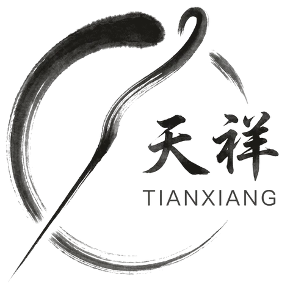
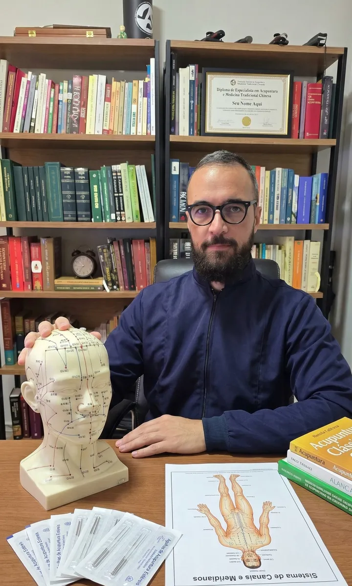
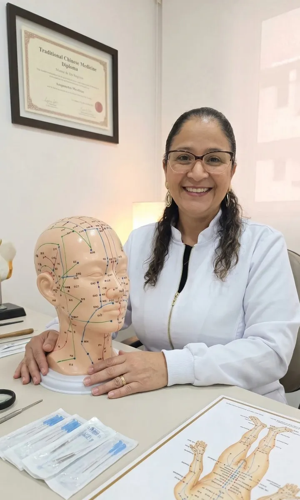

Dor lombar e ciática
A lombalgia é a queixa mais comum no consultório. Tratamos a dor e os fatores que a mantêm: tensão muscular, postura e rotina.
Acupuntura, ventosaterapia e massagem terapêutica
Cuidamos da dor e do que está por trás dela. Na TianXiang, todo tratamento começa olhando para você por inteiro: corpo, sono, alimentação e emoções.
Jardim Aurélia, Campinas. Atendimento de segunda a sábado.

Para a Medicina Tradicional Chinesa, o corpo é um sistema. Uma dor lombar pode ter relação com o sono, com o estresse e até com o que você come. Por isso a avaliação vai além do ponto que dói, e o plano de tratamento combina as técnicas certas para o seu caso.
Dor que dura mais de três meses não se resolve em uma sessão. Ela pede diagnóstico, plano e acompanhamento. É assim que trabalhamos, combinando acupuntura, massagem terapêutica e terapias da Medicina Chinesa.
A lombalgia é a queixa mais comum no consultório. Tratamos a dor e os fatores que a mantêm: tensão muscular, postura e rotina.
Acupuntura, ventosaterapia e massagem terapêutica
Pescoço travado, ombros pesados e dor que sobe para a cabeça. Soltamos a musculatura e reduzimos a tensão acumulada.
Acupuntura, ventosaterapia e liberação miofascial
Crises frequentes costumam ter gatilhos no sono, na alimentação e no estresse. A Medicina Chinesa olha para todos eles.
Acupuntura, auriculoterapia e dietoterapia chinesa
Dor espalhada, cansaço e sono ruim. O tratamento é contínuo e gentil, com ajustes a cada sessão.
Acupuntura, laserterapia e massagem relaxante
Joelhos, ombros, punhos e cotovelos. Trabalhamos a inflamação local e a musculatura ao redor.
Acupuntura, laserterapia e fotobiomodulação
Formigamento, queimação ou choque após lesões e cirurgias. Um plano de longo prazo, em conjunto com seu médico.
Acupuntura, craniopuntura e auriculoterapia
As terapias da Medicina Chinesa complementam o acompanhamento médico e não o substituem. Não interrompa medicamentos sem orientação do seu médico.
A acupuntura estimula pontos específicos do corpo com agulhas finas e descartáveis para regular o fluxo de energia, reduzir a dor e equilibrar o organismo. Na TianXiang, ela faz parte de um plano: você sabe o que vamos tratar, em quantas sessões e como medir a evolução.
Uma conversa detalhada sobre seu histórico, sintomas e rotina, com observação da língua e do pulso.
Identificamos o padrão de desequilíbrio que está por trás da queixa principal.
Número de sessões, frequência e as técnicas que vamos combinar no seu caso.
A evolução é registrada sessão a sessão, e o plano é ajustado conforme você melhora.
Técnicas que potencializam a acupuntura ou funcionam sozinhas, conforme a necessidade de cada paciente.
Estímulo de pontos da orelha com sementes ou agulhas. Ajuda no controle da ansiedade, da dor e da compulsão alimentar, e prolonga o efeito do tratamento entre as sessões.
Sessões de ventosaterapia em Campinas com copos que criam sucção sobre a pele, soltam a fáscia e melhoram a circulação. Indicada para contraturas, torcicolo e dores musculares e articulares.
Na Medicina Chinesa, cada alimento tem uma natureza e age sobre os órgãos. A orientação alimentar é personalizada para o seu diagnóstico e acompanha o tratamento em casa.
Laser de baixa intensidade aplicado nos pontos de acupuntura e nos tecidos. Sem agulhas, é uma opção para quem tem receio delas e auxilia em inflamações, dores e cicatrização.
Da massagem relaxante à terapêutica, cada técnica tem uma indicação. Toque no nome para ver para quem ela é mais indicada.
Focada em dores e disfunções específicas. Libera pontos de tensão e realinha a musculatura com técnicas de liberação miofascial.
Indicada para dores crônicas, lesões, contraturas e rigidez muscular.
A massagem terapêutica somada às ventosas, que melhoram a circulação e aliviam dores musculares e articulares.
Indicada para torcicolo, dores nas costas e tensão muscular persistente.
Movimentos suaves que aliviam o estresse e promovem bem-estar e tranquilidade.
Indicada para ansiedade, insônia, dores de cabeça tensionais e cansaço.
Pedras vulcânicas aquecidas deslizam sobre a musculatura, aliviam tensões e melhoram a circulação.
Indicada para relaxamento profundo e dores crônicas musculares.
O escalda-pés prepara o corpo e estimula a circulação. Na sequência, a massagem relaxante alivia as tensões do corpo todo.
Indicada para quem quer desacelerar de verdade, com uma sessão mais longa.
Escalda-pés com ervas seguido de massagem relaxante nos pés e nas mãos. Alivia o cansaço e melhora a circulação.
Indicada para pernas cansadas, má circulação e um cuidado rápido no meio da semana.
Valores e horários pelo WhatsApp. Pacotes podem ser parcelados.
Agendar uma massagemMassagem rápida em cadeira ergonômica, feita no seu escritório ou evento. Em poucos minutos, alivia a tensão muscular e o estresse, e a equipe volta ao trabalho com mais disposição e foco.
Uma pausa curta na cadeira de massagem muda o resto do dia de quem passa horas na frente do computador.
Atendemos empresas em Campinas e região.
Fundador da TianXiang. Une a tradição chinesa a um método de acompanhamento rigoroso: cada paciente tem diagnóstico, plano e evolução registrada.

Especialista em massagens relaxantes e terapêuticas. Técnica apurada e cuidado em cada atendimento, do alívio das tensões ao relaxamento profundo.
A sensação mais comum é uma leve picada ou um peso no ponto, que passa rápido. As agulhas são muito finas e descartáveis. Para quem tem receio, a laserterapia estimula os mesmos pontos sem agulha.
Depende do quadro. Dores recentes costumam responder em poucas sessões. Dores crônicas pedem um plano de algumas semanas, com sessões regulares. A estimativa é feita na avaliação inicial.
Não. A acupuntura e as terapias da Medicina Chinesa complementam o acompanhamento médico. Não interrompa medicamentos ou tratamentos sem orientação do seu médico.
Na Av. Nossa Senhora da Consolação, 431, sala 4, Jardim Aurélia, Campinas-SP, CEP 13033-140. O atendimento é de segunda a sábado, nos períodos da manhã e da tarde, com horário agendado pelo WhatsApp (11) 98832-2921.
Sim. Levamos a quick massage, em cadeira ergonômica, para empresas e eventos em Campinas e região, com 1 ou 2 cadeiras simultâneas. O orçamento é feito pela quantidade de horas.
Cartão de débito ou crédito, dinheiro e Pix. Pacotes de tratamento podem ser parcelados.
Conte rapidamente o que está sentindo pelo WhatsApp. Respondemos com os horários disponíveis.